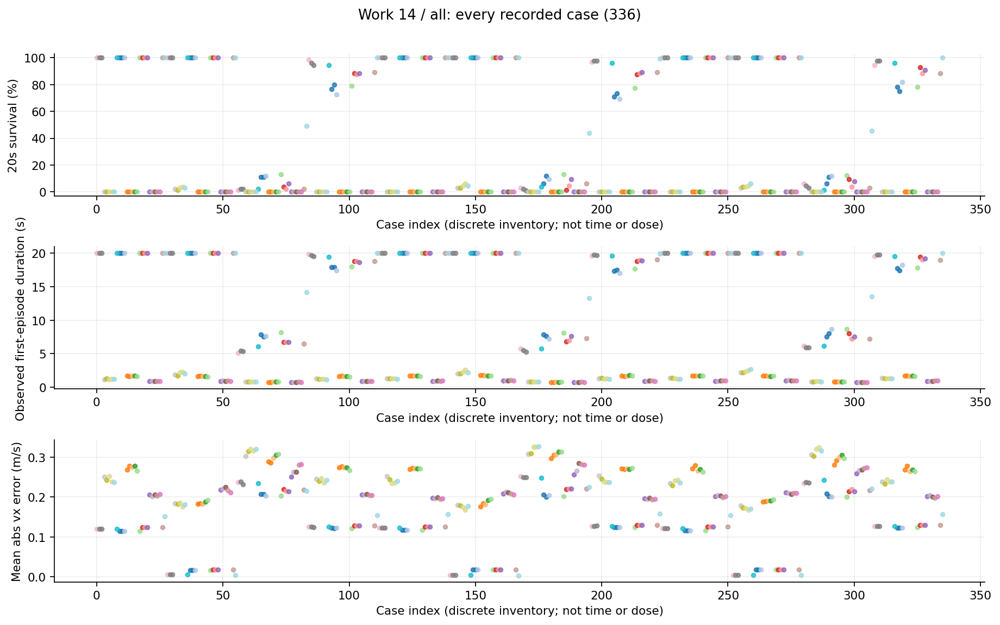
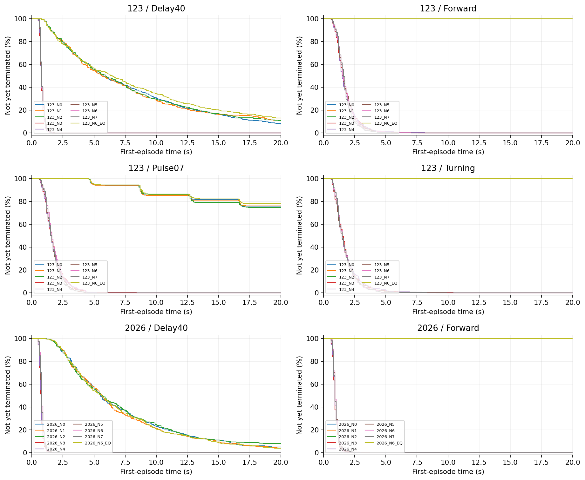
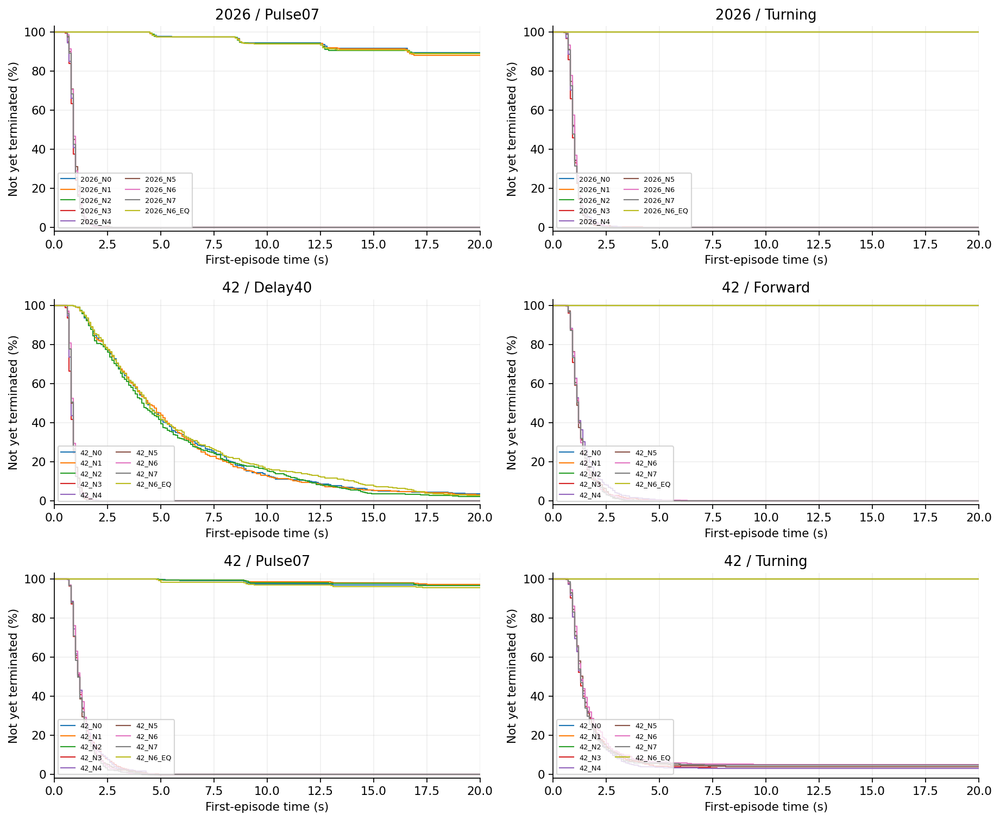
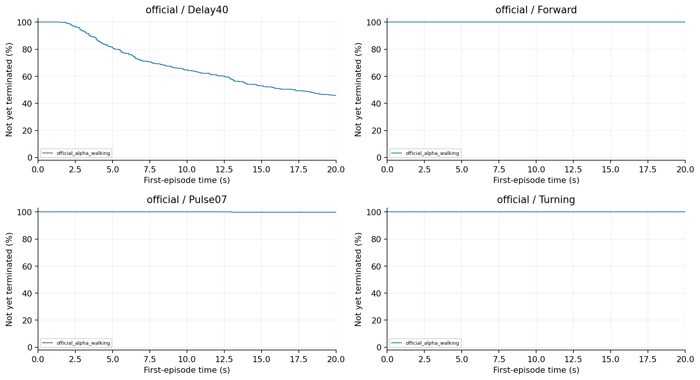
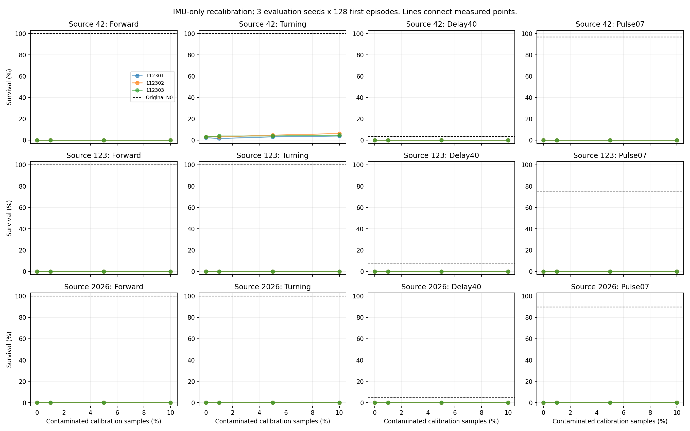
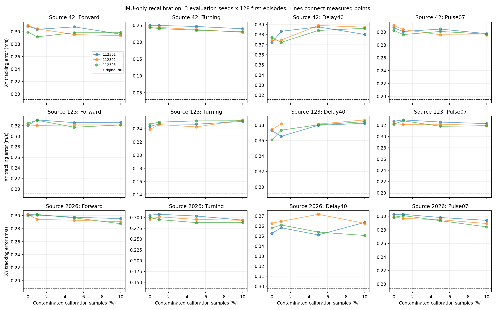
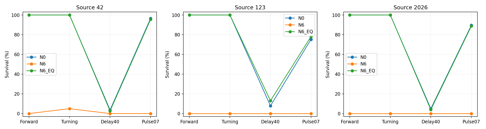

14 V2 N推理统计对照研究报告
干净重校准本身即可使策略失败，说明统计坐标与固定权重兼容性必须先验收；不能把污染校准相对原模型的巨大跌幅全算作污染效果。
整理日期 2026年10月15日 本轮仅分析已有数据 不新增实验
工作范围
336项、43,008首回合，原模型与统计构造/等价补偿对照，三评估seed。
我们如何完成这项工作
区分原统计追加与重设的IMU校准、不同污染比例及首层等价补偿；保持不相关字段和来源身份。N是推理统计对照，不更新原PPO权重。正式逐回合数据与后续独立复算按同条件匹配。
现有结果及解释
1. N3干净重校准与N6污染校准的Forward存活都为0%。两者已落在地板，既不支持“污染成功”，也不能据两者相同证明污染毫无额外作用。
2. Pulse07中N3的1152回合有1142个在首脉冲前失败，约99.13%。失效主要在管线进入故障前已发生，而不是脉冲才触发。
3. 首层等价补偿离线最大输出误差约4.77×10^-7，正常闭环存活恢复，支持统计坐标变化的函数传递解释；但不意味着所有故障或所有状态逐位等价。
完整结果表
阶段、条件和命令分别保留。未记录的指标显示未记录，不按0填充。表内百分比为存活，不是任务成功率。
查看本工作全部112个汇总单元
图表及读图注释
读图注释 normalizer改变输入坐标，原网络权重并不会自动重新适应。均值/尺度失配可能让干净观测也落在不熟悉区域。
读图注释 N0/N6EQ与N3/N6应分别对照；不能跨统计管线只挑最大跌幅。图中重合曲线需要结合存活时间，避免地板掩盖差异。
英文坐标速查：survival 是规定时长存活，不是任务完成率；duration / seconds 是首回合有效寿命；vx 是前向速度，XY 是平面速度；yaw 是绕竖直轴旋转；MSE 是动作拟合平方误差；pp 是百分点，例如90%到80%为下降10个百分点。完整解释见读图指南。
图1 全部任务点 all

每个点是一项真实任务；横轴仅是文件记录顺序，不是连续变量，故不连线。点保留评估seed差异。条件、模型和分母可在全数据浏览器按编号查询；早停时误差只覆盖终止前。图2 首回合存续曲线 第1组

横轴为首回合仿真秒，纵轴为尚未因任何原因终止的比例；20秒超时保留在终点，不画成死亡。由已保存终止时间重算，在0.1秒网格显示；不是完整姿态轨迹，也不把跨评估seed回合当独立训练。相同曲线可能重合。图3 首回合存续曲线 第2组

横轴为首回合仿真秒，纵轴为尚未因任何原因终止的比例；20秒超时保留在终点，不画成死亡。由已保存终止时间重算，在0.1秒网格显示；不是完整姿态轨迹，也不把跨评估seed回合当独立训练。相同曲线可能重合。图4 首回合存续曲线 第3组

横轴为首回合仿真秒，纵轴为尚未因任何原因终止的比例；20秒超时保留在终点，不画成死亡。由已保存终止时间重算，在0.1秒网格显示；不是完整姿态轨迹，也不把跨评估seed回合当独立训练。相同曲线可能重合。图5 dose survival

保留原实验图，不改变其样本、区间或协议定义。原图英文标注见本报告名词注释；探索、确认与历史快照不可混合累计。图6 dose tracking

保留原实验图，不改变其样本、区间或协议定义。原图英文标注见本报告名词注释；探索、确认与历史快照不可混合累计。图7 equivalence survival

保留原实验图，不改变其样本、区间或协议定义。原图英文标注见本报告名词注释；探索、确认与历史快照不可混合累计。限制与不能支持的结论
没有锁定采集分布、旋转或数据覆盖中的唯一原因；没有合法物理扰动等价性证明。NaN/出界为0不等于关节超限为0。
证据入口与复核范围
逐文件SHA及原始路径见输入清单；本轮复算范围见数据审计。下列输入在生成后再次核对未改。
D:\MicroDuckResearch\ti\outputs\microduck_reproduction\preprocessing_integrity_v2\n\formal\results.json
SHA256 1d7b2ed8f076557eadcfd690bf7b24d070a960c55c2dc7d207127df543d056c2
这项工作的价值
价值是提供强反证与等价补偿机制对照，阻止将基础预处理失配包装为新投毒；它为T真实学习和900固定权重状态效应划定不同解释范围。